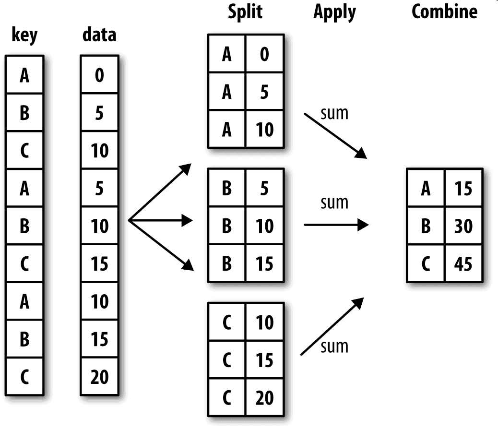

9.8.分组与聚合
from toolkit.Help import Help as H
import pprint
import numpy as np
import pandas as pd
Windows 10
Python 3.7.3 @ MSC v.1915 64 bit (AMD64)
Latest build date 2020.04.12
pandas version: 1.0.1
numpy version: 1.18.1
对数据集进行分组并对各组应用一个函数（无论是聚合还是转换），通常是数据分析工作中的重要环节。在将数据集加载、融合、准备好之后，通常就是计算分组统计或生成透视表。pandas提供了一个灵活高效的gruopby功能，它能以一种自然的方式对数据集进行切片、切块、摘要等操作。
关系型数据库和SQL（Structured Query Language，结构化查询语言）能够如此流行的原因之一就是其能够方便地对数据进行连接、过滤、转换和聚合。但是，像SQL这样的查询语言所能执行的分组运算的种类很有限。pandas可以执行复杂得多的分组运算（利用任何可以接受pandas对象或NumPy数组的函数）。
GroupBy机制
Hadley Wickham（许多热门R语言包的作者）创造了一个用于表示分组运算的术语"split-apply-combine"（拆分－应用－合并）：
-
split：根据分组键将pandas对象（Series、DataFrame或者其他）分成几组。
-
apply：将函数独立地应用于每个组。
-
combine：将函数返回的值合并到一个新对象。
下图大致说明了一个简单的分组聚合过程：

拆分步骤是最简单的，分组键可以有多种形式，且类型不必相同：
- 列表或数组，其长度与待分组的轴一样。
- 表示DataFrame某个列名的值。
- 字典或Series，给出待分组轴上的值与分组名之间的对应关系。
- 函数，用于处理轴索引或索引中的各个标签。
后三种都只是第一种的快捷方式而已，其最终目的仍然是产生一组用于拆分对象的值。
在apply的步骤中，我们可能希望执行以下操作之一：
-
汇总：多个数汇总成一个数值（例如：求和、平均值）。
-
转换：执行一些计算并返回具有相似索引的对象（例如：标准化、填充NA值）。
-
过滤：根据函数在group上面的计算结果得到
True或False，由此决定丢弃一些组（例如：丢弃成员个数过少的组、根据平均值筛选数据）。
groupby方法
.groupby()方法是分组方法：
groupby(by=None, axis=0, level=None,
as_index: bool = True,
sort: bool = True,
group_keys: bool = True,
squeeze: bool = False,
observed: bool = False)
-
by：mapping function、list of function、字典、序列、元组、list of column name。它指定了分组数据（分组键）。-
传入函数，则在每个
index value上调用函数来产生分组数据，axis指定是哪个轴的index value -
传入
Series或者字典，则根据每个index value在字典/Series中的值来产生分组数据 -
传入
column label，则使用该label抽取出来的一列数据产生分组数据 -
传入
column label的list，则使用一组column label抽取出来的多列数据作为分组数据。 -
传入序列，则它直接指定了分组数据。
-
传入序列的序列，则使用这些序列拼接成一个
MulitiIndex，然后根据这个MultiIndex替换掉index后，根据label value来分组。（事实上并没有替换，只是用于说明这个过程）
-
-
axis：指定沿着哪个轴分组 -
level：一个整数、level name或者其序列。如果axis是个MultiIndex，则在指定级别上的索引来分组 -
as_index：一个布尔值。如果为True，则将group label作为输出的index。如果为False，则输出是SQL风格的分组（此时分组的key作为一列，而不是作为index）。Series中，该参数必须为True。 -
sort：一个布尔值。如果为True，则对分组的键进行排序。 -
group_keys：一个布尔值。如果为True，且调用了函数来决定分组，则添加分组键来区分不同的数据 -
squeeze：一个布尔值。如果为True，则尽可能的缩减结果的类型。
该函数返回一个GroupBy对象。
拆分组
创建示例数据:
df = pd.DataFrame({'Class' : ['1班', '2班', '1班', '1班', '2班', '2班'],
'Gender' : ['男', '男', '女', '男', '女', '女'],
'Math Score' : [72, 86, 76, 85, 89, 90],
'Language Score' : [73, 88, 81, 82, 79, 86]},
index=['小明', '小聪', '小红', '小华', '小丽', '小美'])
df.index.name = "Name"
df
Class Gender Math Score Language Score
Name
小明 1班 男 72 73
小聪 2班 男 86 88
小红 1班 女 76 81
小华 1班 男 85 82
小丽 2班 女 89 79
小美 2班 女 90 86
以下是使用不同类型的分组键的示例。
Series或字典
grouped = df['Math Score'].groupby(dict(df['Class']))
# grouped = df['Math Score'].groupby(df['Class'])
pprint.pprint(list(grouped))
[('1班', Name
小明 72
小红 76
小华 85
Name: Math Score, dtype: int64),
('2班', Name
小聪 86
小丽 89
小美 90
Name: Math Score, dtype: int64)]
column label
grouped = df.groupby('Class')
pprint.pprint(list(grouped))
[('1班',
Class Gender Math Score Language Score
Name
小明 1班 男 72 73
小红 1班 女 76 81
小华 1班 男 85 82),
('2班',
Class Gender Math Score Language Score
Name
小聪 2班 男 86 88
小丽 2班 女 89 79
小美 2班 女 90 86)]
通过axis参数，也可以指定行的index：
grouped = df.groupby('Name', axis=0)
list(grouped)
[('小丽',
Class Gender Math Score Language Score
Name
小丽 2班 女 89 79),
('小华',
Class Gender Math Score Language Score
Name
小华 1班 男 85 82),
('小明',
Class Gender Math Score Language Score
Name
小明 1班 男 72 73),
('小红',
Class Gender Math Score Language Score
Name
小红 1班 女 76 81),
('小美',
Class Gender Math Score Language Score
Name
小美 2班 女 90 86),
('小聪',
Class Gender Math Score Language Score
Name
小聪 2班 男 86 88)]
list of column label
# axis=1 沿着1轴拆分 使用0轴的lable
grouped = df.groupby(['Class','Gender'], axis=1)
pprint.pprint(list(grouped))
[]
序列
seq_1 = list(df['Class'])
seq_2 = list(df['Gender'])
grouped = df['Math Score'].groupby(seq_1)
print(list(grouped), "\n")
grouped = df['Math Score'].groupby([seq_1, seq_2])
print(list(grouped))
[('1班', Name
小明 72
小红 76
小华 85
Name: Math Score, dtype: int64), ('2班', Name
小聪 86
小丽 89
小美 90
Name: Math Score, dtype: int64)]
[(('1班', '女'), Name
小红 76
Name: Math Score, dtype: int64), (('1班', '男'), Name
小明 72
小华 85
Name: Math Score, dtype: int64), (('2班', '女'), Name
小丽 89
小美 90
Name: Math Score, dtype: int64), (('2班', '男'), Name
小聪 86
Name: Math Score, dtype: int64)]
函数
# 定义函数
def fun_1(key):
return key
def fun_2(key):
return "a"
# function
grouped = df['Math Score'].groupby(fun_1)
print(list(grouped), "\n")
# list of function
grouped = df.groupby([fun_1, fun_2])
print(list(grouped))
[('小丽', Name
小丽 89
Name: Math Score, dtype: int64), ('小华', Name
小华 85
Name: Math Score, dtype: int64), ('小明', Name
小明 72
Name: Math Score, dtype: int64), ('小红', Name
小红 76
Name: Math Score, dtype: int64), ('小美', Name
小美 90
Name: Math Score, dtype: int64), ('小聪', Name
小聪 86
Name: Math Score, dtype: int64)]
[(('小丽', 'a'), Class Gender Math Score Language Score
Name
小丽 2班 女 89 79), (('小华', 'a'),
Class Gender Math Score Language Score
Name
小华 1班 男 85 82), (('小明', 'a'),
Class Gender Math Score Language Score
Name
小明 1班 男 72 73), (('小红', 'a'),
Class Gender Math Score Language Score
Name
小红 1班 女 76 81), (('小美', 'a'),
Class Gender Math Score Language Score
Name
小美 2班 女 90 86), (('小聪', 'a'),
Class Gender Math Score Language Score
Name
小聪 2班 男 86 88)]
遍历组
grouped = df.groupby('Class')
for name, group in grouped:
print(name)
print(group)
1班
Class Gender Math Score Language Score
Name
小明 1班 男 72 73
小红 1班 女 76 81
小华 1班 男 85 82
2班
Class Gender Math Score Language Score
Name
小聪 2班 男 86 88
小丽 2班 女 89 79
小美 2班 女 90 86
选择组
grouped = df.groupby('Class')
grouped.get_group("1班")
Class Gender Math Score Language Score
Name
小明 1班 男 72 73
小红 1班 女 76 81
小华 1班 男 85 82
cut 函数
pandas.cut(x, bins, right=True, labels=None, retbins=False, precision=3,
include_lowest=False)
x：一维的数组。-
bins：一个整数、一个序列。-
整数：它指定了划分区间的数量。每个区间是等长的，且最左侧的区间的左侧比
x最小值小0.1%；最右侧的区间的右侧比x最大值大0.1%。 -
一个序列：它给出了
bins的每个划分点。
-
-
right：一个布尔值。如果为True，则区间是左开右闭；否则区间是左闭右开的区间。 labels：一个array或者None。如果为一个array，则它指定了结果bins的label（要求长度与bins数量相同）。如果为None，则使用区间来表示。retbins：一个布尔值。如果为True，则返回binsprecision：一个整数，给出存储和显示bin label的精度include_lowest：一个布尔值。如果为True，则最左侧bin的左侧是闭区间
返回的是一个Categorical对象或者Series对象。该函数类似于numpy.histogram()函数。
qcut 函数
pandas.qcut(x, q, labels=None, retbins=False, precision=3)
-
q：一个整数或者序列。-
整数：它指定了划分区间的数量。
-
一个序列：它给出了百分比划分点。比如
[0,0.25,0.5,0.75,0.1]。0.25代表25%划分点。如果数据不在任何区间内，则标记为NaN。
-
-
其他参数与
cut相同。(qcut没有bins参数）
聚合
常用聚合函数
聚合函数可以减小返回对象的尺寸。下面列出了一些常用的汇总功能：
| 功能 | 描述 |
|---|---|
mean() |
计算组的平均值 |
sum() |
计算组值之和 |
size() |
计算组大小 |
count() |
计算各组的元素的数量 |
std() |
组的标准偏差 |
var() |
计算组的方差 |
sem() |
均值的标准误 |
describe() |
生成描述性统计 |
first() |
返回每组的第一个值 |
last() |
返回每组的最后一个值 |
nth() |
取第n个值，如果n是一个列表，则取一个子集 |
min() |
计算组值的最小值 |
max() |
计算组值的最大值 |
上面的汇总函数将排除NA值。 将Series减少为标量值的任何函数都是聚合函数，并且可以正常工作，一个简单的例子是。
自定义聚合函数
如果希望使用自己的聚合函数，只需要将其传入.aggregate(func, *args, **kwargs)或者.agg()方法即可。其中func接受一维数组，返回一个标量值。
- 注意：自定义聚合函数会慢得多。这是因为在构造中间分组数据块时存在非常大的开销（函数调用、数据重排等）
- 你可以将前面介绍的
GroupBy的统计函数名以字符串的形式传入。 - 如果你传入了一组函数或者函数名，则得到的结果中，相应的列就用对应的函数名命名。如果你希望提供一个自己的名字，则使用
(name,function)元组的序列。其中name用作结果列的列名。 - 如果你希望对不同的列采用不同的聚合函数，则向
agg()传入一个字典。字典的键就是列名，值就是你希望对该列采用的函数。
grouped = df.groupby('Class')
grouped.aggregate(np.sum)
Math Score Language Score
Class
1班 233 236
2班 265 253
apply 方法
df.apply(func, axis=0, raw=False, reduce=None, result_type=None, args=(), **kwds)
func：一个可调用对象，它会应用于每一行或者每一列axis：指定应用于行还是列。如果为0/'index'，则沿着0轴计算（应用于每一列）；如果为1/'columns'，则沿着1轴计算（应用于每一行）。broadcast：一个布尔值，如果为True，则结果为DataFrame（不足的部分通过广播来填充）raw：一个布尔值。如果为False，则转换每一行/每一列为一个Series，然后传给func作为参数。如果True，则func接受到的是ndarray，而不是Seriesreduce：一个布尔值。用于判断当DataFrame为空时，应该返回一个Series还是返回一个DataFrame。如果为True，则结果为Series；如果为False，则结果为DataFrame。args：传递给func的额外的位置参数（第一个位置参数始终为Series/ndarray）
分组级运算
-
agg/aggregate只是分组级运算其中的一种。它接受一维数组，返回一个标量值。 -
transform是另一个分组级运算。它也接受一维数组。只能返回两种结果：要么是一个标量值（该标量值将被广播），或者一个相同大小的结果数组。- 无法通过字典来对不同的列进行不同的
transform
- 无法通过字典来对不同的列进行不同的
GroupBy.transform(func, *args, **kwargs)
apply是另一个分组级运算。它是最一般化的分组级运算。它将待处理的对象拆分成多个片段，然后对各个片段调用传入的函数，最后尝试将各个片段组合到一起。
GroupBy.apply(func, *args, **kwargs)
-
func：运算函数。其第一个位置参数为待处理对象。其返回值是一个标量值或者pandas对象。 -
args/kwargs是传递给func的额外的位置参数与关键字参数。
对于DataFrame的.groupby时，传递给func的第一个参数是DataFrame；对于Series的.groupby，传递给func的第一个参数是Series。
pd.cut()/qcut()函数返回的是Categorical对象。我们可以用它作为.groupby()的by参数的值。这样可以实现桶分析。